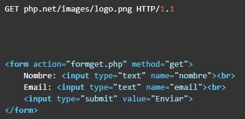
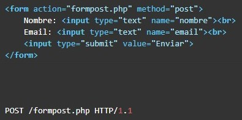

El http (en inglés HyperText Transfer Protocol o Protocolo de Transferencia de Hiper Textos) es el protocolo de transmisión de información de la World Wide Web, es decir, el código que se establece para que el computador solicitante y el que contiene la información solicitada puedan hablar un mismo idioma a la hora de transmitir información por la red.
Con el http se establecen criterios de sintaxis y semántica informática de forma y significado, para el establecimiento de la comunicación entre los diferentes elementos que constituyen la arquitectura web: servidores, clientes, proxies. Fue creado en 1999 por el World Wide Web Consortium en colaboración con la Internet Engineering Task Force.
Se trata de un protocolo “sin estado”, vale decir, que no lleva registro de visitas anteriores sino que siempre empieza de nuevo. La información relativa a visitas previas se almacena en estos sistemas en las llamadas “cookies”, almacenadas en el sistema cliente.
El http ha pasado por numerosas versiones hasta alcanzar la actual a principios del siglo XXI, llamada HTTP/2. Sus primeros intentos se produjeron en 1991 y arrojaron versiones parciales en 1996, 1999, 2000 y, finalmente, la vigente en 2015.
El http, como se ha dicho, es un lenguaje que media entre las peticiones del cliente y las respuestas del servidor en la Internet, para permitir una comunicación fluida y en un mismo lenguaje. Este protocolo establece las pautas a seguir, los métodos de petición y cuenta con cierta flexibilidad para incorporar nuevas peticiones y funcionalidades, en especial a medida que se avanza en sus versiones.
Considerando que la Internet es poco más que una compleja red de intercambio de información entre computadores a distancia, este tipo de herramientas digitales son clave en establecer las bases para ordenar y facilitar la transmisión de la información.
El funcionamiento de http se basa en un esquema de petición-respuesta entre el servidor web y el “agente usuario” o cliente que realiza la solicitud de transmisión de datos. Un cliente puede ser un explorador determinado, cuando intentamos abrir una página web, o los rastreadores web que las inspeccionan.
Por ejemplo: Al abrir una página web específica, el intercambio informativo entre nuestro explorador web y el servidor donde reside la información establecerá de qué manera debe transmitirse la información, en qué lugar están las imágenes y en qué orden se me mostrarán, etc. Este intercambio de comandos de solicitud y códigos de respuesta da como resultado la representación en mi computador de la misma información contenida originalmente en el servidor, que puede estar a miles de kilómetros de distancia.
Por https se entiende HyperText Transfer Procotol Secure o Protocolo Seguro de Transferencia de Hipertexto, que no es más que la versión segura del http, es decir, una variante del mismo protocolo que se basa en la creación de un canal cifrado para la transmisión de la información, lo cual lo hace más apropiado para ciertos datos de tipo sensible.
A diferencia del http, el https está protegido contra la intervención de terceros que puedan espiar el intercambio de información o hacerse con datos del mismo, mediante el uso de “capas de red” que permiten sólo al servidor y al cliente cifrar y descifrar la información enviada mediante el intercambio previo de certificados de red, una suerte de convalidación inicial de confianza para establecer la transferencia de información.
Los métodos http permiten comunicar al servidor lo que se quiere realizar con un resource bajo una URL.
Los métodos más importates de http son POST, GET, PUT, DELETE y HEAD.
El método GET se emplea para leer una representación de un resource. En caso de respuesta positiva, GET devuelve la representación en un formato concreto: HTML, XML, JSON o imágenes, JavaScript, CSS, etc. En caso de respuesta negativa devuelve 404 (not found) o 400 (bad request). Por ejemplo: en la carga de una página web, primero se carga la url solicitada:

Aunque se puedan enviar datos a través del método GET, en muchos casos se utiliza POST por las limitaciones de GET. En caso de respuesta positiva devuelve 201 (created). Los POST requests se envían normalmente con formularios:

Utilizado PUT normalmente para actualizar contenidos, pero también pueden crearlos. Tampoco muestra ninguna información en la URL. En caso de éxito devuelve 201 (created, en caso de que la acción haya creado un elemento) o 204 (no response, si el servidor no devuelve ningún contenido). A diferencia de POST es idempotente, si se crea o edita un resource con PUT y se hace el mismo request otra vez, el resource todavía está ahí y mantiene el mismo estado que en la primera llamada. Si con una llamada PUT se cambia aunque sea sólo un contador en el resource, la llamada ya no es idempotente, ya que se cambian contenidos.
Simplemente DELETE elimina un resource identificado en la URI. Si se elimina correctamente devuelve 200 junto con un body response, o 204 sin body. DELETE, al igual que PUT y GET, también es idempotente.
Es idéntido a GET, pero el servidor no devuelve el contenido en el http response. Cuando se envía un HEAD request, significa que sólo se está interesado en el código de respuesta y los headers http, no en el propio documento. Con este método el navegador puede comprobar si un documento se ha modificado, por razones de caching. Puede comprobar también directamente si el archivo existe.